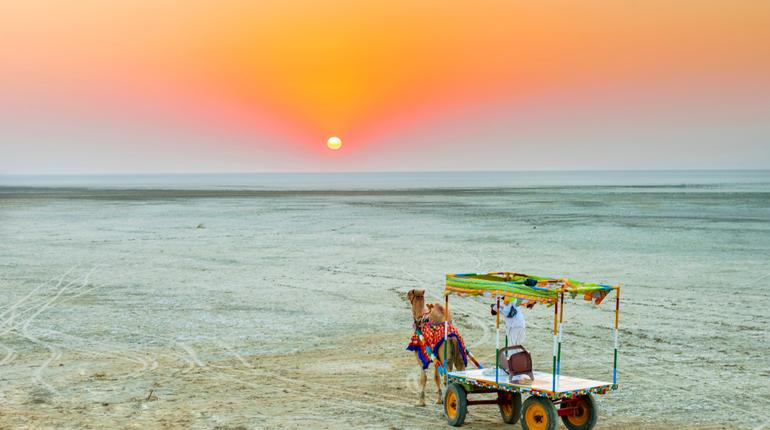
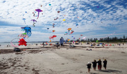
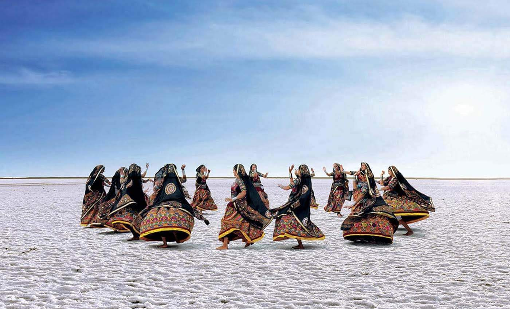

Great Rann of Kutch is one of the unique winter destinations in India.It is one of the largest salt deserts in the world
This remarkable place with its surreal landscapes is a photographer’s delight, and has in the recent
years grown popular as a destination for offbeat travel.
How to reach there?
The Great Rann of Kutch is a salt marsh in the Thar desert in the Kutch district of Gujarat, India.
Bhuj is the nearest airport to the Rann of Kutch. From the Bhuj, you can take auto or taxi to reach Rann of Kutch.
There are state transport and private buses available from most the major cities in Gujarat and some even from Rajasthan
to get into Kutch. You can easily hire taxis too. You can also drive and the best road to take would be National Highway 8A to reach Kutch.
Top things to do?
Known across the world for the colorful white sand desert festival, Rann of Kutch organizes the Rann Utsav every year
in the winter season, for the period between November and February.One can indulge in various activities such as hot air
balloon and camel rides, which makes it among the top picks for destinations for winter vacations in India.


